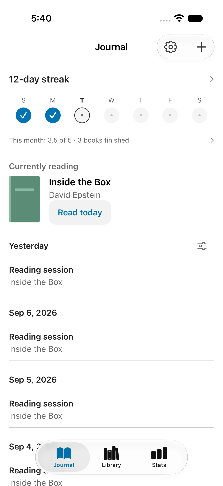
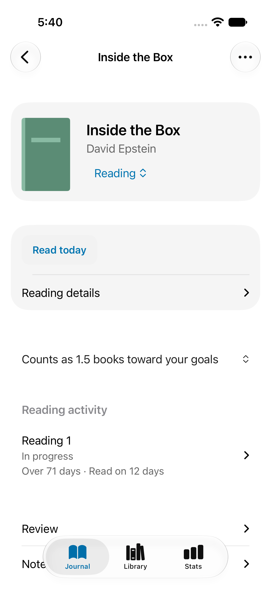
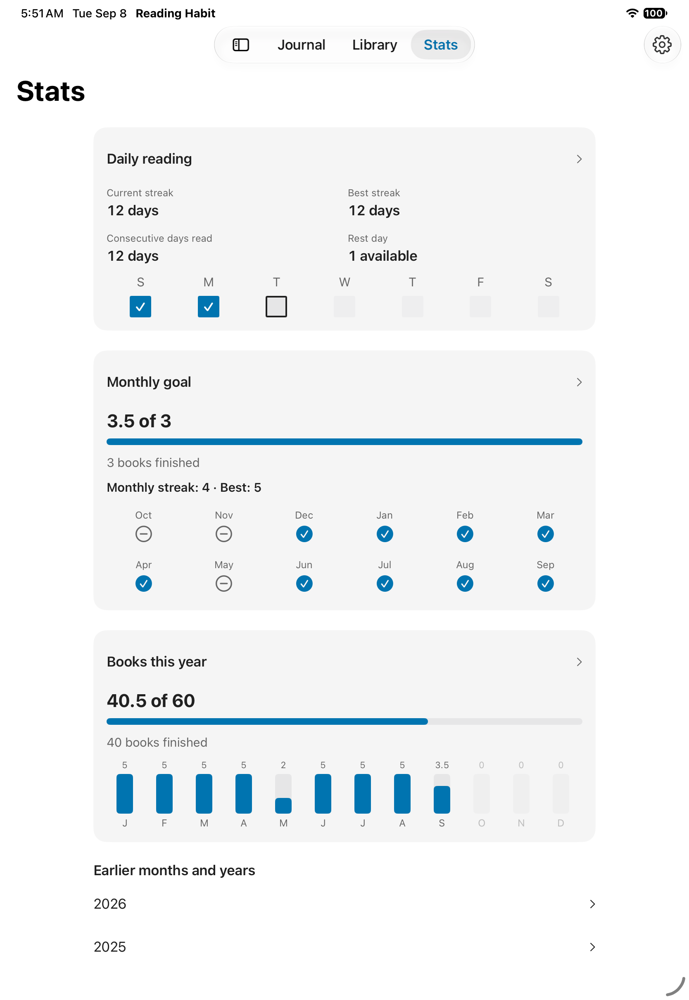

Keep what comes next.
Save a title, a series, or something a friend mentioned. Keep their words and their suggested starting point. Arrange your To Read list when you’re ready.
Books, people, and recommendationsFor iPhone, iPad, and Mac
Remember what to read. Record a little reading. Enjoy looking back.
Keep your books, the people who recommended them, and the days you spent reading—all in one quiet place.
In development · Public release coming later

Room for the whole reading life
Save a title, a series, or something a friend mentioned. Keep their words and their suggested starting point. Arrange your To Read list when you’re ready.
Books, people, and recommendationsTap Read today to keep a record. Track pages, chapters, percentages, or listening position if you want to. There’s no timer to start.
Recording your readingBrowse your journal, revisit a finished book, and follow daily consistency alongside monthly and yearly goals you choose.
Understanding your goals
As much detail as you want
Some days, a check-in is enough.
For the rest, there’s a place for progress, formats, dates, notes, and your own review. Read a favorite again and keep the earlier reading intact.
Let a longer book count for more toward your goals. A finished reread counts too.
Explore reading history and rereadsA rhythm of your own
See the days you read. Seven consecutive reading days earn one rest day, used automatically when you miss a day.
Choose your target and see each finished reading contribute. Monthly streaks remember the months you reached your goal.
Set an independent yearly target. See weighted progress alongside the actual number of readings you finished.

A library that stays yours
Your library lives on your device and syncs through your private iCloud database when iCloud is available. Export a JSON backup to keep a copy of your own, or use CSV for a spreadsheet.
Sync, backups, and moving your libraryMake yourself at home
From your first book to a full reading year, the guide walks through every part of the app.
Reading Habit is in development for iPhone, iPad, and Mac, with iOS 27, iPadOS 27, and macOS 27 as the minimum supported versions. A public App Store or TestFlight download is not available yet. This site documents the current development version.